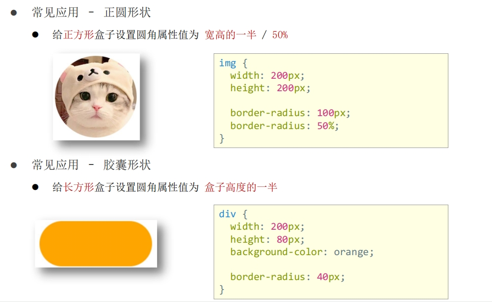

CSS
CSS 定义
层叠样式表 (Cascading Style Sheets，缩写为 CSS），是一种 样式表 语言，用来描述 HTML 文档的呈现（美化内容）。
CSS 引入
内部样式表 - style
<!DOCTYPE html>
<html lang="en">
<head>
<meta charset="UTF-8">
<meta http-equiv="X-UA-Compatible" content="IE=edge">
<meta name="viewport" content="width=device-width, initial-scale=1.0">
<title>初识 CSS</title>
<style>
p {
color: red; /* 文字颜色 */
font-size: 30px; /* 字号 */
}
</style>
</head>
<body>
<p>体验 CSS</p>
</body>
</html>
css 代码写在 style 标签里面,常用与学习使用
外部样式表 - link
CSS 代码写在单独的 CSS 文件中（.css）， 在 HTML 使用 link 标签引入,开发使用
my.css 文件内容
p {
color: red;
}
<!DOCTYPE html>
<html lang="en">
<head>
<meta charset="UTF-8">
<meta http-equiv="X-UA-Compatible" content="IE=edge">
<meta name="viewport" content="width=device-width, initial-scale=1.0">
<title>CSS 引入方式</title>
<!-- link 引入外部样式表； rel：关系，样式表 -->
<link rel="stylesheet" href="./my.css">
</head>
<body>
<p>这是 p 标签</p>
</body>
</html>
行内样式表 - style
CSS 写在标签的 style 属性值里， 配合 JavaScript 使用
<!DOCTYPE html>
<html lang="en">
<head>
<meta charset="UTF-8">
<meta http-equiv="X-UA-Compatible" content="IE=edge">
<meta name="viewport" content="width=device-width, initial-scale=1.0">
<title>CSS 引入方式</title>
</head>
<body>
<p>这是 p 标签</p>
<!-- 行内，style=" CSS" -->
<div style="color: green; font-size: 30px;">这是 div 标签</div>
</body>
</html>
选择器
标签选择器
标签选择器：使用标签名作为选择器 → 选中同名标签设置相同的样式。 - 特点：选中同名标签设置相同的样式，无法差异化同名标签的样式
<!DOCTYPE html>
<html lang="en">
<head>
<meta charset="UTF-8">
<meta http-equiv="X-UA-Compatible" content="IE=edge">
<meta name="viewport" content="width=device-width, initial-scale=1.0">
<title>标签选择器</title>
<style>
p {
color: red;
}
</style>
</head>
<body>
<p>这是 p 标签</p>
<p>1111</p>
<p>2222</p>
</body>
</html>
类选择器
查找标签，差异化设置标签的显示效果,为相同的标签设置不同的类名， class = "CLASSNAME"
<!DOCTYPE html>
<html lang="en">
<head>
<meta charset="UTF-8">
<meta http-equiv="X-UA-Compatible" content="IE=edge">
<meta name="viewport" content="width=device-width, initial-scale=1.0">
<title>类选择器</title>
<style>
.red {
color: red;
}
.size {
font-size: 50px;
}
</style>
</head>
<body>
<!-- 一个类选择器可以给多个标签使用 -->
<p class="red">111111</p>
<p>222222</p>
<!-- 一个标签可以使用多个类名，class属性值写多个类名，类名用空格隔开 -->
<div class="red size">div 标签</div>
</body>
</html>
id选择器
：查找标签，差异化设置标签的显示效果, 一般配合 JavaScript 使用，很少用来设置 CSS 样式。同一个 id 选择器在一个页面只能使用一次
<!DOCTYPE html>
<html lang="en">
<head>
<meta charset="UTF-8">
<meta http-equiv="X-UA-Compatible" content="IE=edge">
<meta name="viewport" content="width=device-width, initial-scale=1.0">
<title>id选择器</title>
<style>
/* 定义 */
#red {
color: red;
}
</style>
</head>
<body>
<!-- 使用 -->
<div id="red">div 标签</div>
</body>
</html>
通配符选择器
作用：查找页面所有标签，设置相同样式。
通配符选择器： *，不需要调用，浏览器自动查找页面所有标签，设置相同的样式
通配符选择器可以用于清除标签的默认样式，例如：标签默认的外边距、内边距
<!DOCTYPE html>
<html lang="en">
<head>
<meta charset="UTF-8">
<meta http-equiv="X-UA-Compatible" content="IE=edge">
<meta name="viewport" content="width=device-width, initial-scale=1.0">
<title>通配符选择器</title>
<style>
* {
color: red;
}
</style>
</head>
<body>
<p>p 标签</p>
<div>div 标签</div>
<h1>h1 标签</h1>
<ul>
<li>li</li>
<li>li</li>
<li>li</li>
</ul>
<strong>strong</strong>
</body>
</html>
复合选择器
由两个或多个基础选择器，通过不同的方式组合而成，可以更准确更高效的选择目标元素
后代选择器
选中某元素的后代元素, 父选择器 子选择器 { CSS 属性}，父子选择器之间用空格隔开。
<style>
div span {
color: red;
}
</style>
...
<body>
<span> span 标签</span>
<div>
<span>这是 div 的儿子 span</span >
</div>
</body>
...
子代选择器
子代选择器：选中某元素的子代元素（最近的子级）。选择器写法：父选择器 > 子选择器 { CSS 属性}，父子选择器之间用 > 隔开。
<style>
div > span {
color: red;
}
</style>
并集选择器
并集选择器：选中多组标签设置相同的样式. 选择器写法：选择器1, 选择器2, …, 选择器N { CSS 属性}，选择器之间用 , 隔开
<style>
div,
p,
span {
color: red;
}
</style>
<div> div 标签</div>
<p>p 标签</p>
<span>span 标签</sp
伪类选择器
<!DOCTYPE html>
<html lang="en">
<head>
<meta charset="UTF-8">
<meta http-equiv="X-UA-Compatible" content="IE=edge">
<meta name="viewport" content="width=device-width, initial-scale=1.0">
<title>伪类选择器</title>
<style>
/* 任何标签都可以设置鼠标悬停的状态 */
a:hover {
color: red;
}
/* div:hover */
.box:hover {
color: green;
}
</style>
</head>
<body>
<a href="#">a 标签，超链接</a>
<div class="box">div 标签</div>
</body>
</html>
伪类超链接
<!DOCTYPE html>
<html lang="en">
<head>
<title>Document</title>
<style>
a:link {
color: pink; /*访问前*/
}
a:visited {
color: gray; /*访问后*/
}
a:hover {
color: red; /*鼠标悬停*/
}
a:active {
color: blue; /*点击时*/
}
</style>
</head>
<body>
<a href="https://www.baidu.com">百度</a>
</body>
</html>
结构伪类选择器
作用：根据元素的结构关系查找元素。
- E:first-child: 查找的一个E元素
- E:lastchild: 查找最后一个E元素
- E:nth-child(N): 查找第N个E元素(第一个元素N=1)
- E:nth-child(公式)
- 偶数： 2n
- 奇数： 2n+1;2n-1
- 找到5的倍数： 5n
- 找到地5个以后的标签：n+5
伪元素选择器
- E::before : 在E元素前面添加一个伪装
- E::afer: 在E元素最后面添加一个伪元素 必须要设置 content，如果content没有内容，可以引号留空
<!DOCTYPE html>
<html lang="en">
<head>
<meta charset="UTF-8">
<meta name="viewport" content="width=device-width, initial-scale=1.0">
<title>Document</title>
<style>
div::before {
content: "before";
background-color: yellow;
width: 18px;
}
div::after {
content: "after";
background-color: red;
}
</style>
</head>
<body>
<div>这是一个伪装元素示例</div>
</body>
</html>
画盒子
目标：使用合适的选择器画盒子

<!DOCTYPE html>
<html lang="en">
<head>
<meta charset="UTF-8">
<meta http-equiv="X-UA-Compatible" content="IE=edge">
<meta name="viewport" content="width=device-width, initial-scale=1.0">
<title>画盒子</title>
<style>
.red {
/* 宽度 */
width: 100px;
/* 高度 */
height: 100px;
/* 背景色 */
background-color: brown;
}
.orange {
width: 200px;
height: 200px;
background-color: orange;
}
</style>
</head>
<body>
<div class="red">div1</div>
<div class="orange">div2</div>
</body>
</html>
文字控制属性
- 字体大小：
font-sizefont-size: 30px, 谷歌浏览器默认字号是16px ，PC 端网页最常用的单位 px
- 文字粗细：
font-weight- 正常： 400 或normal
- 加粗： 700 或 bold
- 字体样式：
font-style, 清除默认的倾斜效果- 正常： normal
- 倾斜： italic
- 行高：
line-height- 数字 + px
- 数字（当前标签font-size属性值的倍数）
- 垂直居中技巧：行高属性值等于盒子高度属性值
-
字体族：
font-family, 执行顺序：从左向右依次查找font-family: Microsoft YaHei, Heiti SC, tahoma, arial, Hiragino Sans GB, "\5B8B\4F53", sans-serif;
-
font 复合属性:
- 将多个属性合并成一行
font: italic 700 30px/2 楷体;是否倾斜 是否加粗 字号/行高 字体; - 字号和字体值必须书写，否则 font 属性不生效
- 将多个属性合并成一行
-
文本缩进：
text-indent- 数字 + px
- 数字 + em（推荐：1em = 当前标签的字号大小）：text-indent: 2em;
-
文本对齐方式：
text-align- left: 左对齐
- center： 居中对齐
- right： 右对齐
-
文本修饰线：
text-decoration- none: 无
- underline： 下划线
- line-through： 删除线
- overline 上划线
color 文字颜色
背景属性
背景色 - background-color
背景图 - background-image（bgi）
背景图默认有平铺（复制）效果
背景图平铺方式- background-repeat
- no-repeat: 不平铺
- repeat： 平铺,默认效果
- repeat-x: 水平方向平铺
- repeat-y: 垂直方向平铺
背景图位置 - background-position
- left
- right
- top
- bottom
- center
背景图缩放- background-size
- cover：等比例缩放背景图片以完全覆盖背景区，可能背景图片部分看不见
- contain：等比例缩放背景图片以完全装入背景区，可能背景区部分空白
- 百分比：根据盒子尺寸计算图片大小
背景图固定 - background-attachment
背景不会随着元素的内容滚动 - fixed
背景复合属性-background
属性值：背景色 背景图 背景图平铺方式 背景图位置/背景图缩放 背景图固定（空格隔开各个属性值，不区分顺序）
div {
width: 400px;
height: 400px;
background: pink url(./images/1.png) no-repeat right center/cover;
}
显示模式
布局网页的时候，根据标签的显示模式选择合适的标签摆放内容。
- 块级元素：
- 独占一行
- 宽度默认是父级的100%
- 添加宽高属性生效
- 行内元素
- 一行可以显示多个
- 设置宽高属性不生效,宽高尺寸由内容撑开
- 行内块元素
- 一行可以显示多个
- 设置宽高属性生效,宽高尺寸，也可以由内容撑开
转换显示模式- display
- block: 块级别
- inline-block: 行内块
- inline: 行内
综合案例-热词

<!DOCTYPE html>
<html lang="en">
<head>
<meta charset="UTF-8">
<meta name="viewport" content="width=device-width, initial-scale=1.0">
<title>Document</title>
<style>
a {
display: block;
width: 200px;
height: 80px;
background-color: #3064bb;
color: #fff;
text-decoration: none;
text-align: center;
line-height: 80px;
font-size: 18px;
}
a:hover {
background-color: #608dd9;
}
</style>
</head>
<body>
<div>
<a href="">HTML</a>
<a href="">CSS</a>
<a href="">JavaScript</a>
<a href="">React</a>
<a href="">Vue</a>
</div>
</body>
</html>
盒子模型
作用：布局网页，摆放盒子和内容
盒子模型 – 组成
盒子模型重要组成部分： - 内容区域 – width & height - 内边距 – padding（出现在内容与盒子边缘之间） - 边框线 – border - 外边距 – margin（出现在盒子外面）
盒子模型 – 边框线-border
边框线粗细 线条样式 颜色（不区分顺序）- border: 5px solid brown
- solid: 实线
- dashed：虚线
- dotted： 点线
div {
border-top: 2px solid red;
border-right: 3px dashed green;
border-bottom: 4px dotted blue;
border-left: 5px solid orange;
width: 200px;
height: 200px;
background-color: pink;
}
盒子模型 – 内边距-padding
div {
/* 四个方向 内边距相同 */
padding: 30px;
/* 单独设置一个方向内边距 */
padding-top: 10px;
padding-right: 20px;
padding-bottom: 40px;
padding-left: 80px;
width: 200px;
height: 200px;
background-color: pink;
}
padding 多值写法：
- 一个值 padding: 10px;: 四个方向均为10px
- 二个值： padding： 10px 20px;: 上下10px,左右20px
- 三个值：padding: 10px 20px 30px;: 上10px,左右20px, 下30px
- 四个值：padding: 10px 20px 30px 40px;: 上下左右
盒子模型 – 尺寸计算
由于 盒子尺寸 = 内容尺寸 + border尺寸 + 内边距尺寸，所有给盒子添加border /padding 会撑大盒子，为了保持盒子大小不不表，我们可以采取下面两种方式
- 手动做减法，减掉 border / padding 的尺寸
- 內减模式：box-sizing: border-box
盒子模型 – 外边距 - margin
技巧：版心居中 – 左右 margin 值 为 auto（盒子要有宽度）
盒子模型 – 元素溢出-overflow
- hidden: 溢出隐藏
- scroll： 溢出滚动，无论是否溢出，都显示滚动条位置
- auto: 溢出滚动：溢出时才显示滚动位置
外边距问题 – 合并现象
垂直排列的兄弟元素，上下 margin 会合并 - 取两个 margin 中的较大值生效
外边距问题 – 塌陷问题
父子级的标签，子级的添加 上外边距 会产生塌陷问题， 现象：导致父级一起向下移动
解决方法： - 取消子级margin，父级设置padding - 父级设置 overflow: hidden - 父级设置 border-top
<!DOCTYPE html>
<html lang="en">
<head>
<meta charset="UTF-8">
<meta name="viewport" content="width=device-width, initial-scale=1.0">
<title>Document</title>
<style>
body {
background-color: antiquewhite;
}
.father {
padding: 20px;
width: 180px;
height: 180px;
background-color: pink;
box-sizing: border-box;
overflow: hidden
}
.son {
/* margin-top: 20px; */
width: 80px;
height: 80px;
background-color: green;
}
</style>
</head>
<body>
<div class="father">
<div class="son"></div>
</div>
</body>
</html>
行内元素 – 内外边距问题
行内元素添加 margin 和 padding，无法改变元素垂直位置,解决方法：给行内元素添加 line-height 可以改变垂直位置
<style>
span {
margin: 50px;
padding: 20px;
line-height: 100px;
}
</style>
盒子模型 – 圆角 border-radius
作用：设置元素的外边框为圆角。 - 属性名：border-radius - 属性值：属性值是圆角半径 - 数字+px - 百分比
- 一个值:
border-radius: 10px: 四个角都为10px - 二个值：
border-radius: 10px 20px: 左上右下：10px, 右上，左下： 20px - 三个值：
border-radius: 10px 20px 30px左上 10px 右上+左下20px 右下 30px - 四个值：
border-radius: 10px 20px 30px 40px
从左上角开始顺时针赋值，当前角没有数值则与对角取值相同。

盒子模型 – 阴影（拓展）
作用：给元素设置阴影效果
属性名：box-shadow
属性值：X 轴偏移量 Y 轴偏移量 模糊半径 扩散半径 颜色 内外阴影
注意：
• X 轴偏移量 和 Y 轴偏移量 必须书写
• 默认是外阴影，内阴影需要添加 inset
div {
width: 200px;
height: 80px;
background-color: orange;
box-shadow: 2px 5px 10px 0 rgba(0, 0, 0, 0.5) inset;
}
清除默认样式
清除标签默认的样式，比如：默认的内外边距
/* 清除默认内外边距 */
* {
margin: 0;
padding: 0;
box-sizing: border-box;
}
/* 清除列表项目符号 */
li {
list-style: none;
}
浮动
作用：让块元素水平排列。 属性名：float 属性值 - left：左对齐 - right：右对齐
特点： - 浮动后的盒子顶对齐 - 浮动后的盒子具备行内块特点 - 浮动后的盒子脱标，不占用标准流的位置
浮动 – 产品区域布局
Flex 布局
Flex 布局也叫弹性布局，是浏览器提倡的布局模型，非常适合结构化布局，提供了强大的空间分布和对齐能力。 Flex 模型不会产生浮动布局中脱标现象，布局网页更简单、更灵活。
Flex – 组成
给父元素设置 display: flex，子元素可以自动挤压或拉伸
- 创建flex容器： display: flex
- 弹性盒子
- 主轴：默认在水平方向 justify-content
- 侧州/交叉轴：默认垂直方向 align-items
<!DOCTYPE html>
<html lang="en">
<head>
<meta charset="UTF-8">
<meta name="viewport" content="width=device-width, initial-scale=1.0">
<title>Document</title>
<style>
.box {
display: flex; /*创建flex 容器*/
justify-content: space-between; /*主轴对齐方式*/
border: 1px solid #000;
}
.box div {
width: 200px;
height: 100px;
background-color: pink;
}
</style>
</head>
<body>
<div class="box">
<div>1</div>
<div>2</div>
<div>3</div>
</div>
</body>
</html>
主轴对齐方式
属性名：justify-content - flex-start: 默认值，弹性盒子从起点开始依次排列 - flex-end: 弹性盒子从终点开始依次排列 - center: 弹性盒子从终点开始依次排列 - space-between :弹性盒子沿株洲均与排列，空白间距均分在弹性盒子之间 - space-around :弹性盒子沿株洲均与排列，空白间距均分在弹性盒子两侧 - space-evently： 弹性盒子沿株洲均与排列，弹性河西与容器之间间距相等
侧轴对齐方式
- align-items：当前弹性容器内所有弹性盒子的侧轴对齐方式（给弹性容器设置）
- align-self：单独控制某个弹性盒子的侧轴对齐方式（给弹性盒子设置）
- stretch: 弹性盒子沿着侧州先方向被拉甚至铺满容器
- center： 弹性盒子燕策州剧中
- flex-start
- flext-end
修改主轴方向
flex-direction - row： 水平方向 从左到右 - column： 垂直方向，从上到下 - row-reverse： 水平方向，从右向左 - column-reverse： 垂直方向，从下到上
弹性伸缩比
作用：控制弹性盒子的主轴方向的尺寸。 属性名：flex 属性值：整数数字，表示占用父级剩余尺寸的份数。
弹性盒子换行
弹性盒子可以自动挤压或拉伸，默认情况下，所有弹性盒子都在一行显示 属性名：flex-wrap 属性值 - wrap：换行 - nowrap：不换行（默认）
行对齐方式
属性名：align-content 属性值